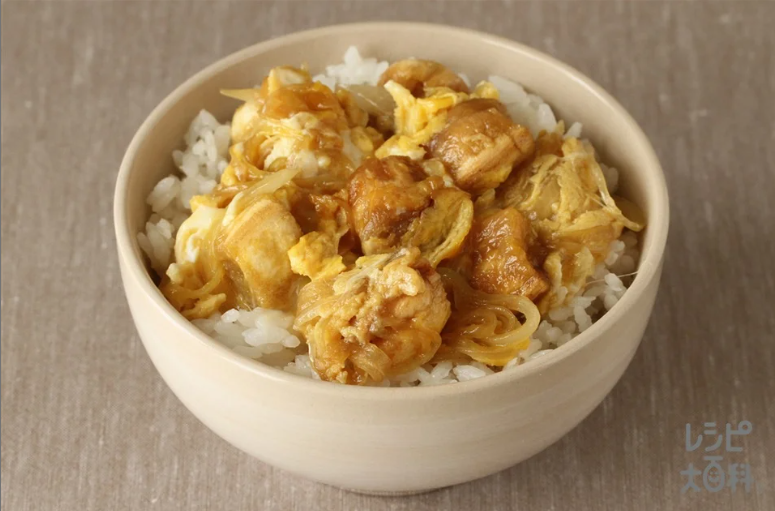

なんちゃって親子丼

材料（2人分）
- 玉ねぎ ... 1/2個（100g）
- 麩 ... 20g
- 水... 1/2カップ
- しょうゆ... 大さじ2
- 砂糖... 小さじ2
- 「ほんだし」... 小さじ1
- 溶き卵... 2個分
- ご飯... 2杯（茶碗）（280g）
- 「AJINOMOTO さらさらキャノーラ油」... 大さじ1
作り方（調理時間:10分/目安）
- 玉ねぎは薄切りにする。
- フライパンに油を熱し、（１）の玉ねぎを入れてしんなりするまで炒める。
- 麩、Ａを加えて２～３分煮、溶き卵を回し入れ、卵に火が通るまで煮る。
- 器にご飯をよそい、（３）を盛る。
引用元
味の素株式会社